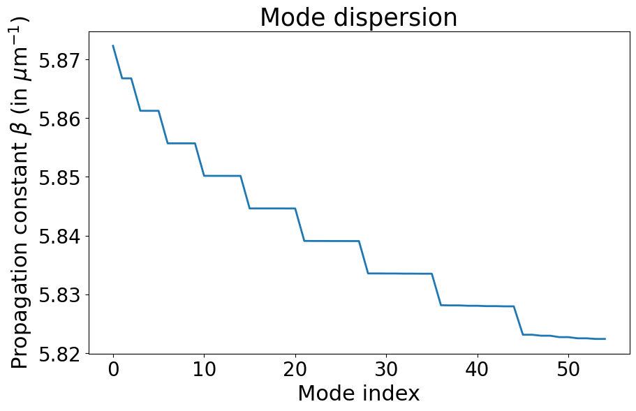
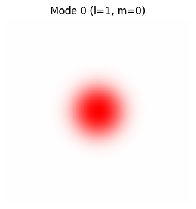
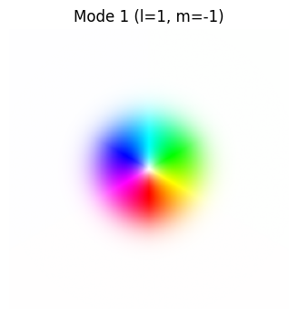
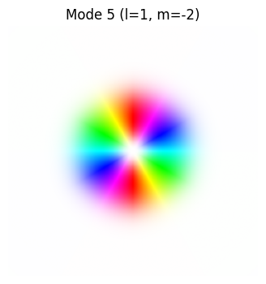
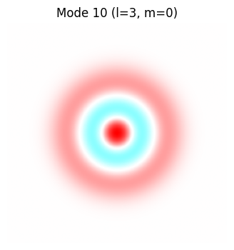
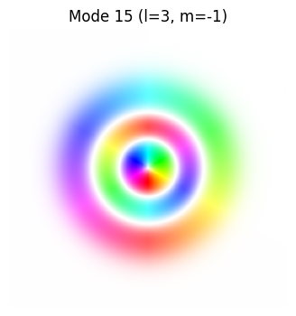
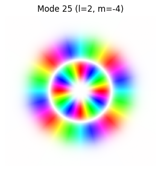
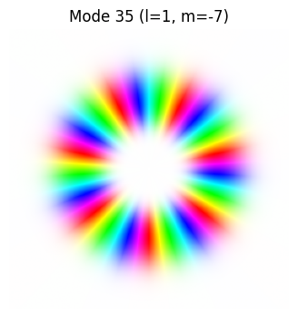

Graded index fiber using the radial solver#
[1]:
import matplotlib.pyplot as plt
%matplotlib inline
import numpy as np
import pyMMF
from pyMMF.functions import colorize
1. Fiber parameters#
[2]:
NA = 0.2
radius = 25 # in microns
areaSize = 2.4*radius # calculate the field on an area larger than the diameter of the fiber
n_points_modes = 256 # resolution of the window
n1 = 1.45 # index of refraction at r=0 (maximum)
wl = 1.55 # wavelength in microns
curvature = None
k0 = 2.*np.pi/wl
r_max = 3.2*radius
npoints_search = 2**8
dh = 2*radius/npoints_search
# solver parameters
change_bc_radius_step = 0.95
N_beta_coarse = 1000
degenerate_mode = 'exp'
min_radius_bc = 1.5
2. Compute the mode with radial solver#
[3]:
profile = pyMMF.IndexProfile(
npoints = n_points_modes,
areaSize = areaSize
)
profile.initParabolicGRIN(n1=n1, a=radius, NA=NA)
solver = pyMMF.propagationModeSolver()
solver.setIndexProfile(profile)
solver.setWL(wl)
modes = solver.solve(mode='radial',
curvature = curvature,
r_max = r_max, # max radius to calculate (and first try for large radial boundary condition)
dh = dh, # radial resolution during the computation
min_radius_bc = min_radius_bc, # min large radial boundary condition
change_bc_radius_step = change_bc_radius_step, #change of the large radial boundary condition if fails
N_beta_coarse = N_beta_coarse, # number of steps of the initial coarse scan
degenerate_mode = degenerate_mode
)
2024-07-16 10:34:26,014 - pyMMF.core [DEBUG ] Debug mode ON.
2024-07-16 10:34:26,026 - pyMMF.solv [INFO ] Found 5 radial mode(s) for m=0
2024-07-16 10:34:26,026 - pyMMF.solv [INFO ] Searching propagation constant for |l| = 1
2024-07-16 10:34:26,027 - pyMMF.solv [ERROR ] Field limit 1.0 at the founded beta=0.05066217542815342 is greater than field_limit_tol=0.001
2024-07-16 10:34:26,028 - pyMMF.solv [WARNING] Boundary condition could not be met.
2024-07-16 10:34:26,028 - pyMMF.solv [WARNING] Retrying by changing r_max to 3.04a
2024-07-16 10:34:26,029 - pyMMF.solv [ERROR ] Field limit 1.0 at the founded beta=0.05066217542815342 is greater than field_limit_tol=0.001
2024-07-16 10:34:26,029 - pyMMF.solv [WARNING] Boundary condition could not be met.
2024-07-16 10:34:26,030 - pyMMF.solv [WARNING] Retrying by changing r_max to 2.89a
2024-07-16 10:34:26,031 - pyMMF.solv [ERROR ] Field limit 1.0 at the founded beta=0.05066217542815342 is greater than field_limit_tol=0.001
2024-07-16 10:34:26,031 - pyMMF.solv [WARNING] Boundary condition could not be met.
2024-07-16 10:34:26,031 - pyMMF.solv [WARNING] Retrying by changing r_max to 2.74a
2024-07-16 10:34:26,032 - pyMMF.solv [ERROR ] Field limit 1.0 at the founded beta=0.05066217542815342 is greater than field_limit_tol=0.001
2024-07-16 10:34:26,032 - pyMMF.solv [WARNING] Boundary condition could not be met.
2024-07-16 10:34:26,032 - pyMMF.solv [WARNING] Retrying by changing r_max to 2.61a
2024-07-16 10:34:26,033 - pyMMF.solv [ERROR ] Field limit 1.0 at the founded beta=0.05066217542815342 is greater than field_limit_tol=0.001
2024-07-16 10:34:26,033 - pyMMF.solv [WARNING] Boundary condition could not be met.
2024-07-16 10:34:26,033 - pyMMF.solv [WARNING] Retrying by changing r_max to 2.48a
2024-07-16 10:34:26,034 - pyMMF.solv [ERROR ] Field limit 1.0 at the founded beta=0.05066217542815342 is greater than field_limit_tol=0.001
2024-07-16 10:34:26,035 - pyMMF.solv [WARNING] Boundary condition could not be met.
2024-07-16 10:34:26,035 - pyMMF.solv [WARNING] Retrying by changing r_max to 2.35a
2024-07-16 10:34:26,036 - pyMMF.solv [ERROR ] Field limit 1.0 at the founded beta=0.05066217542815342 is greater than field_limit_tol=0.001
2024-07-16 10:34:26,036 - pyMMF.solv [WARNING] Boundary condition could not be met.
2024-07-16 10:34:26,036 - pyMMF.solv [WARNING] Retrying by changing r_max to 2.23a
2024-07-16 10:34:26,037 - pyMMF.solv [ERROR ] Field limit 0.15890344703001363 at the founded beta=0.05066217542815336 is greater than field_limit_tol=0.001
2024-07-16 10:34:26,037 - pyMMF.solv [WARNING] Boundary condition could not be met.
2024-07-16 10:34:26,038 - pyMMF.solv [WARNING] Retrying by changing r_max to 2.12a
2024-07-16 10:34:26,038 - pyMMF.solv [ERROR ] Field limit 0.019903905112596845 at the founded beta=0.05066217542815337 is greater than field_limit_tol=0.001
2024-07-16 10:34:26,039 - pyMMF.solv [WARNING] Boundary condition could not be met.
2024-07-16 10:34:26,039 - pyMMF.solv [WARNING] Retrying by changing r_max to 2.02a
2024-07-16 10:34:26,040 - pyMMF.solv [ERROR ] Field limit 0.002496484384560775 at the founded beta=0.05066217542815341 is greater than field_limit_tol=0.001
2024-07-16 10:34:26,040 - pyMMF.solv [WARNING] Boundary condition could not be met.
2024-07-16 10:34:26,040 - pyMMF.solv [WARNING] Retrying by changing r_max to 1.92a
2024-07-16 10:34:26,046 - pyMMF.solv [INFO ] Searching propagation constant for |l| = 2
2024-07-16 10:34:26,047 - pyMMF.solv [ERROR ] Field limit -1.0 at the founded beta=0.03961031292887776 is greater than field_limit_tol=0.001
2024-07-16 10:34:26,048 - pyMMF.solv [WARNING] Boundary condition could not be met.
2024-07-16 10:34:26,048 - pyMMF.solv [WARNING] Retrying by changing r_max to 3.04a
2024-07-16 10:34:26,049 - pyMMF.solv [ERROR ] Field limit -1.0 at the founded beta=0.03961031292887776 is greater than field_limit_tol=0.001
2024-07-16 10:34:26,050 - pyMMF.solv [WARNING] Boundary condition could not be met.
2024-07-16 10:34:26,050 - pyMMF.solv [WARNING] Retrying by changing r_max to 2.89a
2024-07-16 10:34:26,051 - pyMMF.solv [ERROR ] Field limit -1.0 at the founded beta=0.03961031292887776 is greater than field_limit_tol=0.001
2024-07-16 10:34:26,051 - pyMMF.solv [WARNING] Boundary condition could not be met.
2024-07-16 10:34:26,051 - pyMMF.solv [WARNING] Retrying by changing r_max to 2.74a
2024-07-16 10:34:26,052 - pyMMF.solv [ERROR ] Field limit 0.6787453967570178 at the founded beta=0.03961031292887755 is greater than field_limit_tol=0.001
2024-07-16 10:34:26,052 - pyMMF.solv [WARNING] Boundary condition could not be met.
2024-07-16 10:34:26,053 - pyMMF.solv [WARNING] Retrying by changing r_max to 2.61a
2024-07-16 10:34:26,054 - pyMMF.solv [ERROR ] Field limit 0.07283564229338893 at the founded beta=0.03961031292887755 is greater than field_limit_tol=0.001
2024-07-16 10:34:26,055 - pyMMF.solv [WARNING] Boundary condition could not be met.
2024-07-16 10:34:26,055 - pyMMF.solv [WARNING] Retrying by changing r_max to 2.48a
2024-07-16 10:34:26,056 - pyMMF.solv [ERROR ] Field limit 0.007826230476869131 at the founded beta=0.03961031292887762 is greater than field_limit_tol=0.001
2024-07-16 10:34:26,056 - pyMMF.solv [WARNING] Boundary condition could not be met.
2024-07-16 10:34:26,056 - pyMMF.solv [WARNING] Retrying by changing r_max to 2.35a
2024-07-16 10:34:26,061 - pyMMF.solv [INFO ] Searching propagation constant for |l| = 3
2024-07-16 10:34:26,062 - pyMMF.solv [ERROR ] Field limit 1.0 at the founded beta=0.028541272457537663 is greater than field_limit_tol=0.001
2024-07-16 10:34:26,062 - pyMMF.solv [WARNING] Boundary condition could not be met.
2024-07-16 10:34:26,062 - pyMMF.solv [WARNING] Retrying by changing r_max to 3.04a
2024-07-16 10:34:26,063 - pyMMF.solv [ERROR ] Field limit -0.48699642863673637 at the founded beta=0.028541272457537452 is greater than field_limit_tol=0.001
2024-07-16 10:34:26,064 - pyMMF.solv [WARNING] Boundary condition could not be met.
2024-07-16 10:34:26,064 - pyMMF.solv [WARNING] Retrying by changing r_max to 2.89a
2024-07-16 10:34:26,065 - pyMMF.solv [ERROR ] Field limit -0.05871870966179392 at the founded beta=0.028541272457537393 is greater than field_limit_tol=0.001
2024-07-16 10:34:26,066 - pyMMF.solv [WARNING] Boundary condition could not be met.
2024-07-16 10:34:26,066 - pyMMF.solv [WARNING] Retrying by changing r_max to 2.74a
2024-07-16 10:34:26,067 - pyMMF.solv [ERROR ] Field limit -0.00708939795496355 at the founded beta=0.02854127245753754 is greater than field_limit_tol=0.001
2024-07-16 10:34:26,067 - pyMMF.solv [WARNING] Boundary condition could not be met.
2024-07-16 10:34:26,068 - pyMMF.solv [WARNING] Retrying by changing r_max to 2.61a
2024-07-16 10:34:26,069 - pyMMF.solv [ERROR ] Field limit -0.0010706266399648353 at the founded beta=0.028541272457537417 is greater than field_limit_tol=0.001
2024-07-16 10:34:26,069 - pyMMF.solv [WARNING] Boundary condition could not be met.
2024-07-16 10:34:26,070 - pyMMF.solv [WARNING] Retrying by changing r_max to 2.48a
2024-07-16 10:34:26,074 - pyMMF.solv [INFO ] Searching propagation constant for |l| = 4
2024-07-16 10:34:26,078 - pyMMF.solv [INFO ] Searching propagation constant for |l| = 5
2024-07-16 10:34:26,091 - pyMMF.solv [INFO ] Found 5 radial mode(s) for m=1
2024-07-16 10:34:26,091 - pyMMF.solv [INFO ] Searching propagation constant for |l| = 1
2024-07-16 10:34:26,093 - pyMMF.solv [ERROR ] Field limit -1.0 at the founded beta=0.04513477880645375 is greater than field_limit_tol=0.001
2024-07-16 10:34:26,093 - pyMMF.solv [WARNING] Boundary condition could not be met.
2024-07-16 10:34:26,094 - pyMMF.solv [WARNING] Retrying by changing r_max to 3.04a
2024-07-16 10:34:26,095 - pyMMF.solv [ERROR ] Field limit -1.0 at the founded beta=0.04513477880645375 is greater than field_limit_tol=0.001
2024-07-16 10:34:26,096 - pyMMF.solv [WARNING] Boundary condition could not be met.
2024-07-16 10:34:26,096 - pyMMF.solv [WARNING] Retrying by changing r_max to 2.89a
2024-07-16 10:34:26,097 - pyMMF.solv [ERROR ] Field limit -1.0 at the founded beta=0.04513477880645375 is greater than field_limit_tol=0.001
2024-07-16 10:34:26,098 - pyMMF.solv [WARNING] Boundary condition could not be met.
2024-07-16 10:34:26,099 - pyMMF.solv [WARNING] Retrying by changing r_max to 2.74a
2024-07-16 10:34:26,100 - pyMMF.solv [ERROR ] Field limit -1.0 at the founded beta=0.04513477880645375 is greater than field_limit_tol=0.001
2024-07-16 10:34:26,100 - pyMMF.solv [WARNING] Boundary condition could not be met.
2024-07-16 10:34:26,100 - pyMMF.solv [WARNING] Retrying by changing r_max to 2.61a
2024-07-16 10:34:26,101 - pyMMF.solv [ERROR ] Field limit -1.0 at the founded beta=0.04513477880645375 is greater than field_limit_tol=0.001
2024-07-16 10:34:26,102 - pyMMF.solv [WARNING] Boundary condition could not be met.
2024-07-16 10:34:26,102 - pyMMF.solv [WARNING] Retrying by changing r_max to 2.48a
2024-07-16 10:34:26,103 - pyMMF.solv [ERROR ] Field limit -1.0 at the founded beta=0.04513477880645375 is greater than field_limit_tol=0.001
2024-07-16 10:34:26,104 - pyMMF.solv [WARNING] Boundary condition could not be met.
2024-07-16 10:34:26,104 - pyMMF.solv [WARNING] Retrying by changing r_max to 2.35a
2024-07-16 10:34:26,105 - pyMMF.solv [ERROR ] Field limit 0.18817122393070848 at the founded beta=0.04513477880645395 is greater than field_limit_tol=0.001
2024-07-16 10:34:26,105 - pyMMF.solv [WARNING] Boundary condition could not be met.
2024-07-16 10:34:26,105 - pyMMF.solv [WARNING] Retrying by changing r_max to 2.23a
2024-07-16 10:34:26,106 - pyMMF.solv [ERROR ] Field limit 0.023019622332721736 at the founded beta=0.04513477880645401 is greater than field_limit_tol=0.001
2024-07-16 10:34:26,106 - pyMMF.solv [WARNING] Boundary condition could not be met.
2024-07-16 10:34:26,107 - pyMMF.solv [WARNING] Retrying by changing r_max to 2.12a
2024-07-16 10:34:26,107 - pyMMF.solv [ERROR ] Field limit 0.003243344452230191 at the founded beta=0.04513477880645405 is greater than field_limit_tol=0.001
2024-07-16 10:34:26,108 - pyMMF.solv [WARNING] Boundary condition could not be met.
2024-07-16 10:34:26,109 - pyMMF.solv [WARNING] Retrying by changing r_max to 2.02a
2024-07-16 10:34:26,117 - pyMMF.solv [INFO ] Searching propagation constant for |l| = 2
2024-07-16 10:34:26,118 - pyMMF.solv [ERROR ] Field limit 1.0 at the founded beta=0.034070167189183195 is greater than field_limit_tol=0.001
2024-07-16 10:34:26,119 - pyMMF.solv [WARNING] Boundary condition could not be met.
2024-07-16 10:34:26,119 - pyMMF.solv [WARNING] Retrying by changing r_max to 3.04a
2024-07-16 10:34:26,122 - pyMMF.solv [ERROR ] Field limit 1.0 at the founded beta=0.034070167189183195 is greater than field_limit_tol=0.001
2024-07-16 10:34:26,122 - pyMMF.solv [WARNING] Boundary condition could not be met.
2024-07-16 10:34:26,123 - pyMMF.solv [WARNING] Retrying by changing r_max to 2.89a
2024-07-16 10:34:26,124 - pyMMF.solv [ERROR ] Field limit 1.0 at the founded beta=0.034070167189183195 is greater than field_limit_tol=0.001
2024-07-16 10:34:26,124 - pyMMF.solv [WARNING] Boundary condition could not be met.
2024-07-16 10:34:26,124 - pyMMF.solv [WARNING] Retrying by changing r_max to 2.74a
2024-07-16 10:34:26,125 - pyMMF.solv [ERROR ] Field limit 0.4864652645862911 at the founded beta=0.034070167189183216 is greater than field_limit_tol=0.001
2024-07-16 10:34:26,125 - pyMMF.solv [WARNING] Boundary condition could not be met.
2024-07-16 10:34:26,125 - pyMMF.solv [WARNING] Retrying by changing r_max to 2.61a
2024-07-16 10:34:26,126 - pyMMF.solv [ERROR ] Field limit 0.061472985543913165 at the founded beta=0.034070167189183154 is greater than field_limit_tol=0.001
2024-07-16 10:34:26,126 - pyMMF.solv [WARNING] Boundary condition could not be met.
2024-07-16 10:34:26,126 - pyMMF.solv [WARNING] Retrying by changing r_max to 2.48a
2024-07-16 10:34:26,127 - pyMMF.solv [ERROR ] Field limit 0.007777864800806037 at the founded beta=0.034070167189183265 is greater than field_limit_tol=0.001
2024-07-16 10:34:26,127 - pyMMF.solv [WARNING] Boundary condition could not be met.
2024-07-16 10:34:26,128 - pyMMF.solv [WARNING] Retrying by changing r_max to 2.35a
2024-07-16 10:34:26,128 - pyMMF.solv [ERROR ] Field limit 0.0011127528043539908 at the founded beta=0.034070167189183195 is greater than field_limit_tol=0.001
2024-07-16 10:34:26,129 - pyMMF.solv [WARNING] Boundary condition could not be met.
2024-07-16 10:34:26,129 - pyMMF.solv [WARNING] Retrying by changing r_max to 2.23a
2024-07-16 10:34:26,137 - pyMMF.solv [INFO ] Searching propagation constant for |l| = 3
2024-07-16 10:34:26,138 - pyMMF.solv [ERROR ] Field limit -0.19714650798060052 at the founded beta=0.02298945455284462 is greater than field_limit_tol=0.001
2024-07-16 10:34:26,139 - pyMMF.solv [WARNING] Boundary condition could not be met.
2024-07-16 10:34:26,139 - pyMMF.solv [WARNING] Retrying by changing r_max to 3.04a
2024-07-16 10:34:26,140 - pyMMF.solv [ERROR ] Field limit -0.024204763117747496 at the founded beta=0.022989454552844683 is greater than field_limit_tol=0.001
2024-07-16 10:34:26,140 - pyMMF.solv [WARNING] Boundary condition could not be met.
2024-07-16 10:34:26,140 - pyMMF.solv [WARNING] Retrying by changing r_max to 2.89a
2024-07-16 10:34:26,141 - pyMMF.solv [ERROR ] Field limit -0.003633187523010476 at the founded beta=0.02298945455284461 is greater than field_limit_tol=0.001
2024-07-16 10:34:26,142 - pyMMF.solv [WARNING] Boundary condition could not be met.
2024-07-16 10:34:26,142 - pyMMF.solv [WARNING] Retrying by changing r_max to 2.74a
2024-07-16 10:34:26,151 - pyMMF.solv [INFO ] Searching propagation constant for |l| = 4
2024-07-16 10:34:26,159 - pyMMF.solv [INFO ] Searching propagation constant for |l| = 5
2024-07-16 10:34:26,178 - pyMMF.solv [INFO ] Found 4 radial mode(s) for m=2
2024-07-16 10:34:26,178 - pyMMF.solv [INFO ] Searching propagation constant for |l| = 1
2024-07-16 10:34:26,179 - pyMMF.solv [ERROR ] Field limit -1.0 at the founded beta=0.039606896670381544 is greater than field_limit_tol=0.001
2024-07-16 10:34:26,180 - pyMMF.solv [WARNING] Boundary condition could not be met.
2024-07-16 10:34:26,180 - pyMMF.solv [WARNING] Retrying by changing r_max to 3.04a
2024-07-16 10:34:26,181 - pyMMF.solv [ERROR ] Field limit -1.0 at the founded beta=0.039606896670381544 is greater than field_limit_tol=0.001
2024-07-16 10:34:26,181 - pyMMF.solv [WARNING] Boundary condition could not be met.
2024-07-16 10:34:26,182 - pyMMF.solv [WARNING] Retrying by changing r_max to 2.89a
2024-07-16 10:34:26,183 - pyMMF.solv [ERROR ] Field limit -1.0 at the founded beta=0.039606896670381544 is greater than field_limit_tol=0.001
2024-07-16 10:34:26,183 - pyMMF.solv [WARNING] Boundary condition could not be met.
2024-07-16 10:34:26,183 - pyMMF.solv [WARNING] Retrying by changing r_max to 2.74a
2024-07-16 10:34:26,184 - pyMMF.solv [ERROR ] Field limit -1.0 at the founded beta=0.039606896670381544 is greater than field_limit_tol=0.001
2024-07-16 10:34:26,184 - pyMMF.solv [WARNING] Boundary condition could not be met.
2024-07-16 10:34:26,184 - pyMMF.solv [WARNING] Retrying by changing r_max to 2.61a
2024-07-16 10:34:26,185 - pyMMF.solv [ERROR ] Field limit -0.21784004542161747 at the founded beta=0.039606896670381475 is greater than field_limit_tol=0.001
2024-07-16 10:34:26,185 - pyMMF.solv [WARNING] Boundary condition could not be met.
2024-07-16 10:34:26,186 - pyMMF.solv [WARNING] Retrying by changing r_max to 2.48a
2024-07-16 10:34:26,187 - pyMMF.solv [ERROR ] Field limit -0.023351419030349846 at the founded beta=0.0396068966703815 is greater than field_limit_tol=0.001
2024-07-16 10:34:26,187 - pyMMF.solv [WARNING] Boundary condition could not be met.
2024-07-16 10:34:26,187 - pyMMF.solv [WARNING] Retrying by changing r_max to 2.35a
2024-07-16 10:34:26,188 - pyMMF.solv [ERROR ] Field limit -0.0028576150347095954 at the founded beta=0.03960689667038151 is greater than field_limit_tol=0.001
2024-07-16 10:34:26,188 - pyMMF.solv [WARNING] Boundary condition could not be met.
2024-07-16 10:34:26,188 - pyMMF.solv [WARNING] Retrying by changing r_max to 2.23a
2024-07-16 10:34:26,196 - pyMMF.solv [INFO ] Searching propagation constant for |l| = 2
2024-07-16 10:34:26,197 - pyMMF.solv [ERROR ] Field limit 1.0 at the founded beta=0.02853435051797808 is greater than field_limit_tol=0.001
2024-07-16 10:34:26,197 - pyMMF.solv [WARNING] Boundary condition could not be met.
2024-07-16 10:34:26,197 - pyMMF.solv [WARNING] Retrying by changing r_max to 3.04a
2024-07-16 10:34:26,198 - pyMMF.solv [ERROR ] Field limit 1.0 at the founded beta=0.02853435051797808 is greater than field_limit_tol=0.001
2024-07-16 10:34:26,198 - pyMMF.solv [WARNING] Boundary condition could not be met.
2024-07-16 10:34:26,198 - pyMMF.solv [WARNING] Retrying by changing r_max to 2.89a
2024-07-16 10:34:26,199 - pyMMF.solv [ERROR ] Field limit -0.14328240174371953 at the founded beta=0.028534350517978226 is greater than field_limit_tol=0.001
2024-07-16 10:34:26,199 - pyMMF.solv [WARNING] Boundary condition could not be met.
2024-07-16 10:34:26,200 - pyMMF.solv [WARNING] Retrying by changing r_max to 2.74a
2024-07-16 10:34:26,200 - pyMMF.solv [ERROR ] Field limit -0.017257643323014805 at the founded beta=0.028534350517978226 is greater than field_limit_tol=0.001
2024-07-16 10:34:26,201 - pyMMF.solv [WARNING] Boundary condition could not be met.
2024-07-16 10:34:26,201 - pyMMF.solv [WARNING] Retrying by changing r_max to 2.61a
2024-07-16 10:34:26,201 - pyMMF.solv [ERROR ] Field limit -0.0025999357835914546 at the founded beta=0.028534350517978244 is greater than field_limit_tol=0.001
2024-07-16 10:34:26,202 - pyMMF.solv [WARNING] Boundary condition could not be met.
2024-07-16 10:34:26,202 - pyMMF.solv [WARNING] Retrying by changing r_max to 2.48a
2024-07-16 10:34:26,209 - pyMMF.solv [INFO ] Searching propagation constant for |l| = 3
2024-07-16 10:34:26,210 - pyMMF.solv [ERROR ] Field limit -0.005271842278740631 at the founded beta=0.017450798239859608 is greater than field_limit_tol=0.001
2024-07-16 10:34:26,210 - pyMMF.solv [WARNING] Boundary condition could not be met.
2024-07-16 10:34:26,210 - pyMMF.solv [WARNING] Retrying by changing r_max to 3.04a
2024-07-16 10:34:26,217 - pyMMF.solv [INFO ] Searching propagation constant for |l| = 4
2024-07-16 10:34:26,234 - pyMMF.solv [INFO ] Found 4 radial mode(s) for m=3
2024-07-16 10:34:26,235 - pyMMF.solv [INFO ] Searching propagation constant for |l| = 1
2024-07-16 10:34:26,236 - pyMMF.solv [ERROR ] Field limit 1.0 at the founded beta=0.034071439795895594 is greater than field_limit_tol=0.001
2024-07-16 10:34:26,237 - pyMMF.solv [WARNING] Boundary condition could not be met.
2024-07-16 10:34:26,237 - pyMMF.solv [WARNING] Retrying by changing r_max to 3.04a
2024-07-16 10:34:26,238 - pyMMF.solv [ERROR ] Field limit 1.0 at the founded beta=0.034071439795895594 is greater than field_limit_tol=0.001
2024-07-16 10:34:26,239 - pyMMF.solv [WARNING] Boundary condition could not be met.
2024-07-16 10:34:26,239 - pyMMF.solv [WARNING] Retrying by changing r_max to 2.89a
2024-07-16 10:34:26,240 - pyMMF.solv [ERROR ] Field limit 1.0 at the founded beta=0.034071439795895594 is greater than field_limit_tol=0.001
2024-07-16 10:34:26,240 - pyMMF.solv [WARNING] Boundary condition could not be met.
2024-07-16 10:34:26,240 - pyMMF.solv [WARNING] Retrying by changing r_max to 2.74a
2024-07-16 10:34:26,241 - pyMMF.solv [ERROR ] Field limit -0.6382788237347834 at the founded beta=0.03407143979589551 is greater than field_limit_tol=0.001
2024-07-16 10:34:26,241 - pyMMF.solv [WARNING] Boundary condition could not be met.
2024-07-16 10:34:26,241 - pyMMF.solv [WARNING] Retrying by changing r_max to 2.61a
2024-07-16 10:34:26,242 - pyMMF.solv [ERROR ] Field limit -0.08026595200906429 at the founded beta=0.0340714397958955 is greater than field_limit_tol=0.001
2024-07-16 10:34:26,242 - pyMMF.solv [WARNING] Boundary condition could not be met.
2024-07-16 10:34:26,242 - pyMMF.solv [WARNING] Retrying by changing r_max to 2.48a
2024-07-16 10:34:26,243 - pyMMF.solv [ERROR ] Field limit -0.01010108939325953 at the founded beta=0.034071439795895546 is greater than field_limit_tol=0.001
2024-07-16 10:34:26,243 - pyMMF.solv [WARNING] Boundary condition could not be met.
2024-07-16 10:34:26,243 - pyMMF.solv [WARNING] Retrying by changing r_max to 2.35a
2024-07-16 10:34:26,244 - pyMMF.solv [ERROR ] Field limit -0.001437016916671921 at the founded beta=0.0340714397958955 is greater than field_limit_tol=0.001
2024-07-16 10:34:26,244 - pyMMF.solv [WARNING] Boundary condition could not be met.
2024-07-16 10:34:26,244 - pyMMF.solv [WARNING] Retrying by changing r_max to 2.23a
2024-07-16 10:34:26,256 - pyMMF.solv [INFO ] Searching propagation constant for |l| = 2
2024-07-16 10:34:26,257 - pyMMF.solv [ERROR ] Field limit 0.5055215288595848 at the founded beta=0.02298910620795198 is greater than field_limit_tol=0.001
2024-07-16 10:34:26,257 - pyMMF.solv [WARNING] Boundary condition could not be met.
2024-07-16 10:34:26,257 - pyMMF.solv [WARNING] Retrying by changing r_max to 3.04a
2024-07-16 10:34:26,258 - pyMMF.solv [ERROR ] Field limit 0.06173612202557878 at the founded beta=0.02298910620795209 is greater than field_limit_tol=0.001
2024-07-16 10:34:26,258 - pyMMF.solv [WARNING] Boundary condition could not be met.
2024-07-16 10:34:26,258 - pyMMF.solv [WARNING] Retrying by changing r_max to 2.89a
2024-07-16 10:34:26,259 - pyMMF.solv [ERROR ] Field limit 0.009217316879060666 at the founded beta=0.022989106207952005 is greater than field_limit_tol=0.001
2024-07-16 10:34:26,259 - pyMMF.solv [WARNING] Boundary condition could not be met.
2024-07-16 10:34:26,259 - pyMMF.solv [WARNING] Retrying by changing r_max to 2.74a
2024-07-16 10:34:26,260 - pyMMF.solv [ERROR ] Field limit 0.00137709822713516 at the founded beta=0.022989106207951974 is greater than field_limit_tol=0.001
2024-07-16 10:34:26,260 - pyMMF.solv [WARNING] Boundary condition could not be met.
2024-07-16 10:34:26,260 - pyMMF.solv [WARNING] Retrying by changing r_max to 2.61a
2024-07-16 10:34:26,268 - pyMMF.solv [INFO ] Searching propagation constant for |l| = 3
2024-07-16 10:34:26,275 - pyMMF.solv [INFO ] Searching propagation constant for |l| = 4
2024-07-16 10:34:26,291 - pyMMF.solv [INFO ] Found 3 radial mode(s) for m=4
2024-07-16 10:34:26,292 - pyMMF.solv [INFO ] Searching propagation constant for |l| = 1
2024-07-16 10:34:26,293 - pyMMF.solv [ERROR ] Field limit -1.0 at the founded beta=0.028530789290099768 is greater than field_limit_tol=0.001
2024-07-16 10:34:26,293 - pyMMF.solv [WARNING] Boundary condition could not be met.
2024-07-16 10:34:26,293 - pyMMF.solv [WARNING] Retrying by changing r_max to 3.04a
2024-07-16 10:34:26,294 - pyMMF.solv [ERROR ] Field limit -1.0 at the founded beta=0.028530789290099768 is greater than field_limit_tol=0.001
2024-07-16 10:34:26,294 - pyMMF.solv [WARNING] Boundary condition could not be met.
2024-07-16 10:34:26,294 - pyMMF.solv [WARNING] Retrying by changing r_max to 2.89a
2024-07-16 10:34:26,295 - pyMMF.solv [ERROR ] Field limit 0.38151206914347563 at the founded beta=0.028530789290099973 is greater than field_limit_tol=0.001
2024-07-16 10:34:26,295 - pyMMF.solv [WARNING] Boundary condition could not be met.
2024-07-16 10:34:26,296 - pyMMF.solv [WARNING] Retrying by changing r_max to 2.74a
2024-07-16 10:34:26,297 - pyMMF.solv [ERROR ] Field limit 0.045592398372013246 at the founded beta=0.028530789290100042 is greater than field_limit_tol=0.001
2024-07-16 10:34:26,297 - pyMMF.solv [WARNING] Boundary condition could not be met.
2024-07-16 10:34:26,297 - pyMMF.solv [WARNING] Retrying by changing r_max to 2.61a
2024-07-16 10:34:26,298 - pyMMF.solv [ERROR ] Field limit 0.006815371754656746 at the founded beta=0.028530789290099952 is greater than field_limit_tol=0.001
2024-07-16 10:34:26,298 - pyMMF.solv [WARNING] Boundary condition could not be met.
2024-07-16 10:34:26,298 - pyMMF.solv [WARNING] Retrying by changing r_max to 2.48a
2024-07-16 10:34:26,299 - pyMMF.solv [ERROR ] Field limit 0.001018969733084437 at the founded beta=0.028530789290100066 is greater than field_limit_tol=0.001
2024-07-16 10:34:26,299 - pyMMF.solv [WARNING] Boundary condition could not be met.
2024-07-16 10:34:26,299 - pyMMF.solv [WARNING] Retrying by changing r_max to 2.35a
2024-07-16 10:34:26,306 - pyMMF.solv [INFO ] Searching propagation constant for |l| = 2
2024-07-16 10:34:26,308 - pyMMF.solv [ERROR ] Field limit 0.003117664564555346 at the founded beta=0.01744070049566171 is greater than field_limit_tol=0.001
2024-07-16 10:34:26,308 - pyMMF.solv [WARNING] Boundary condition could not be met.
2024-07-16 10:34:26,308 - pyMMF.solv [WARNING] Retrying by changing r_max to 3.04a
2024-07-16 10:34:26,316 - pyMMF.solv [INFO ] Searching propagation constant for |l| = 3
2024-07-16 10:34:26,333 - pyMMF.solv [INFO ] Found 3 radial mode(s) for m=5
2024-07-16 10:34:26,334 - pyMMF.solv [INFO ] Searching propagation constant for |l| = 1
2024-07-16 10:34:26,335 - pyMMF.solv [ERROR ] Field limit 0.8563321063878859 at the founded beta=0.022985043200470234 is greater than field_limit_tol=0.001
2024-07-16 10:34:26,335 - pyMMF.solv [WARNING] Boundary condition could not be met.
2024-07-16 10:34:26,336 - pyMMF.solv [WARNING] Retrying by changing r_max to 3.04a
2024-07-16 10:34:26,337 - pyMMF.solv [ERROR ] Field limit 0.10349112388070496 at the founded beta=0.02298504320047015 is greater than field_limit_tol=0.001
2024-07-16 10:34:26,337 - pyMMF.solv [WARNING] Boundary condition could not be met.
2024-07-16 10:34:26,338 - pyMMF.solv [WARNING] Retrying by changing r_max to 2.89a
2024-07-16 10:34:26,339 - pyMMF.solv [ERROR ] Field limit 0.015289935638936287 at the founded beta=0.02298504320047014 is greater than field_limit_tol=0.001
2024-07-16 10:34:26,339 - pyMMF.solv [WARNING] Boundary condition could not be met.
2024-07-16 10:34:26,340 - pyMMF.solv [WARNING] Retrying by changing r_max to 2.74a
2024-07-16 10:34:26,341 - pyMMF.solv [ERROR ] Field limit 0.0022578589952616675 at the founded beta=0.022985043200470227 is greater than field_limit_tol=0.001
2024-07-16 10:34:26,342 - pyMMF.solv [WARNING] Boundary condition could not be met.
2024-07-16 10:34:26,342 - pyMMF.solv [WARNING] Retrying by changing r_max to 2.61a
2024-07-16 10:34:26,350 - pyMMF.solv [INFO ] Searching propagation constant for |l| = 2
2024-07-16 10:34:26,357 - pyMMF.solv [INFO ] Searching propagation constant for |l| = 3
2024-07-16 10:34:26,374 - pyMMF.solv [INFO ] Found 2 radial mode(s) for m=6
2024-07-16 10:34:26,374 - pyMMF.solv [INFO ] Searching propagation constant for |l| = 1
2024-07-16 10:34:26,375 - pyMMF.solv [ERROR ] Field limit -0.02120303092848433 at the founded beta=0.017434568053403994 is greater than field_limit_tol=0.001
2024-07-16 10:34:26,375 - pyMMF.solv [WARNING] Boundary condition could not be met.
2024-07-16 10:34:26,375 - pyMMF.solv [WARNING] Retrying by changing r_max to 3.04a
2024-07-16 10:34:26,376 - pyMMF.solv [ERROR ] Field limit -0.003334655006447873 at the founded beta=0.017434568053403897 is greater than field_limit_tol=0.001
2024-07-16 10:34:26,376 - pyMMF.solv [WARNING] Boundary condition could not be met.
2024-07-16 10:34:26,377 - pyMMF.solv [WARNING] Retrying by changing r_max to 2.89a
2024-07-16 10:34:26,384 - pyMMF.solv [INFO ] Searching propagation constant for |l| = 2
2024-07-16 10:34:26,401 - pyMMF.solv [INFO ] Found 2 radial mode(s) for m=7
2024-07-16 10:34:26,401 - pyMMF.solv [INFO ] Searching propagation constant for |l| = 1
2024-07-16 10:34:26,410 - pyMMF.solv [INFO ] Searching propagation constant for |l| = 2
2024-07-16 10:34:26,426 - pyMMF.solv [INFO ] Found 1 radial mode(s) for m=8
2024-07-16 10:34:26,427 - pyMMF.solv [INFO ] Searching propagation constant for |l| = 1
2024-07-16 10:34:26,444 - pyMMF.solv [INFO ] Found 1 radial mode(s) for m=9
2024-07-16 10:34:26,445 - pyMMF.solv [INFO ] Searching propagation constant for |l| = 1
2024-07-16 10:34:26,467 - pyMMF.solv [INFO ] Found 0 radial mode(s) for m=10
2024-07-16 10:34:26,468 - pyMMF.solv [INFO ] Solver found 55 modes is 0.45 seconds.
2024-07-16 10:34:26,469 - pyMMF.core [DEBUG ] Mode data stored in memory.
3. Results#
Dispersion#
[5]:
# sort modes by decreasing propagation constant
modes.sort()
[6]:
plt.figure(figsize=(10,6));
plt.plot((np.real(modes.betas)),
linewidth=2.)
plt.xticks(fontsize = 20)
plt.yticks(fontsize = 20)
plt.title(r'Mode dispersion' ,fontsize = 25)
plt.ylabel(r'Propagation constant $\beta$ (in $\mu$m$^{-1}$)', fontsize = 22)
plt.xlabel(r'Mode index', fontsize = 22)
plt.show()

Display some modes#
[7]:
i_modes = [0,1,5,10,15,25,35]
M0 = modes.getModeMatrix()
for i in i_modes:
Mi = M0[...,i]
profile_arr = Mi.reshape([n_points_modes]*2)
plt.figure(figsize = (4,4))
plt.imshow(colorize(profile_arr,'white'))
plt.axis('off')
plt.title(f'Mode {i} (l={modes.l[i]}, m={modes.m[i]})')







4. Save the data#
[8]:
params = {}
params['NA'] = NA
params['radius'] = radius # in microns
params['areaSize'] = areaSize # calculate the field on an area larger than the diameter of the fiber
params['n_points_modes'] = n_points_modes # resolution of the window
params['n1'] = n1 # index of refraction at r=0 (maximum)
params['wl'] = wl # wavelength in microns
params['curvature'] = curvature
params['k0'] = k0
params['r_max'] = r_max
params['npoints_search'] = npoints_search
params['dh'] = dh
params['min_radius_bc'] = min_radius_bc
params['change_bc_radius_step'] = change_bc_radius_step
params['N_beta_coarse'] = N_beta_coarse
params['degenerate_mode'] = degenerate_mode
params['mode'] = 'radial'
np.savez('GRIN_test_radial', M0 = M0, params = params, betas = modes.betas)